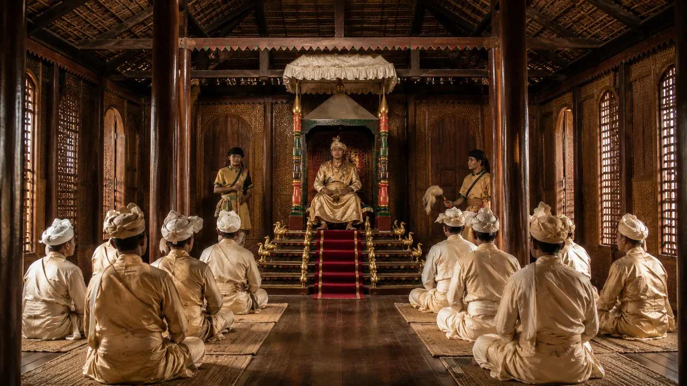

Grand Durbar and the Seven-Tiered Singhason at Rangpur
c. 1710 · The Tungkhungia kings

Rudra Singha presides from the legendary jewel-inlaid lion throne (Singhason) under a golden canopy, welcoming foreign envoys from all corners of India.
Sources have not yet been catalogued for this record.
People: Rudra Singha (Sukhrungphaa)
Open this scene in the interactive archive · Follow this event on MAP